One real render per user-facing action, produced by the app's own
snapshot=, window_snapshot=, statuspanel_snapshot=,
settings_snapshot= and themecards_snapshot= hooks. Every run used a
throwaway HOME/config/state/cache tree, asserted its state through assert=/dump=,
and each image passed a non-blank pixel-variance check. Screen Recording was never used.
Launcher
1 · Launcher, empty
PASS1100x629actions/01-launcher-empty.json
Proves: panelVisible=true,itemCount>0
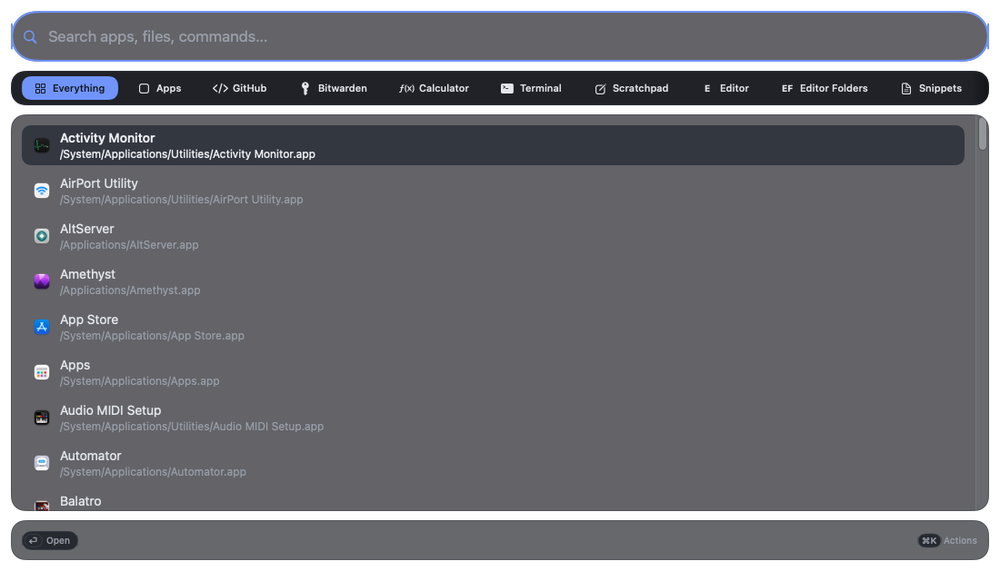
2 · Launcher, typed search results
PASS1100x629actions/02-launcher-search.json
Proves: itemCount>0 for a typed query
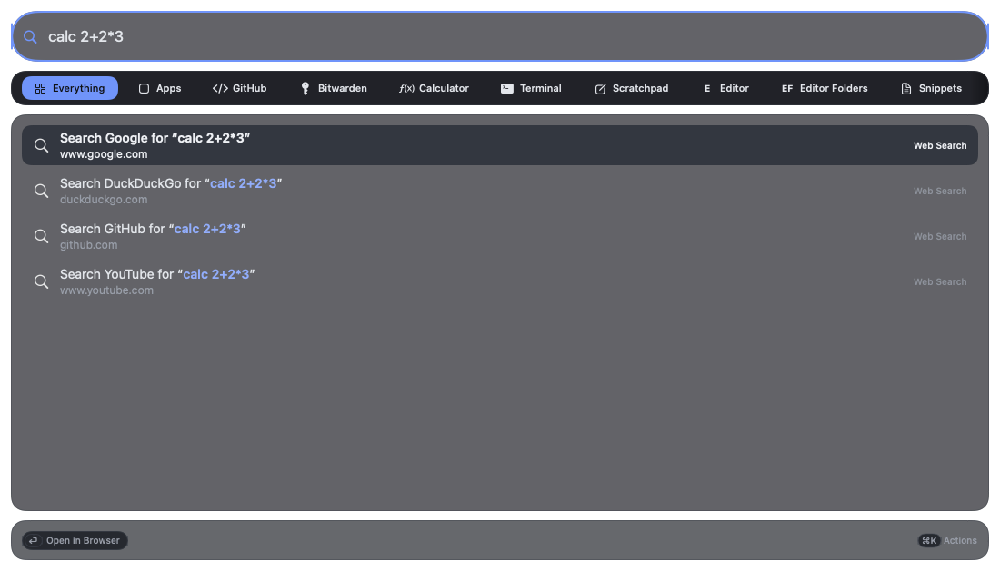
3 · Launcher, no-results state
PASS1100x629actions/03-launcher-no-results.json
Proves: itemCount=0 with a query typed
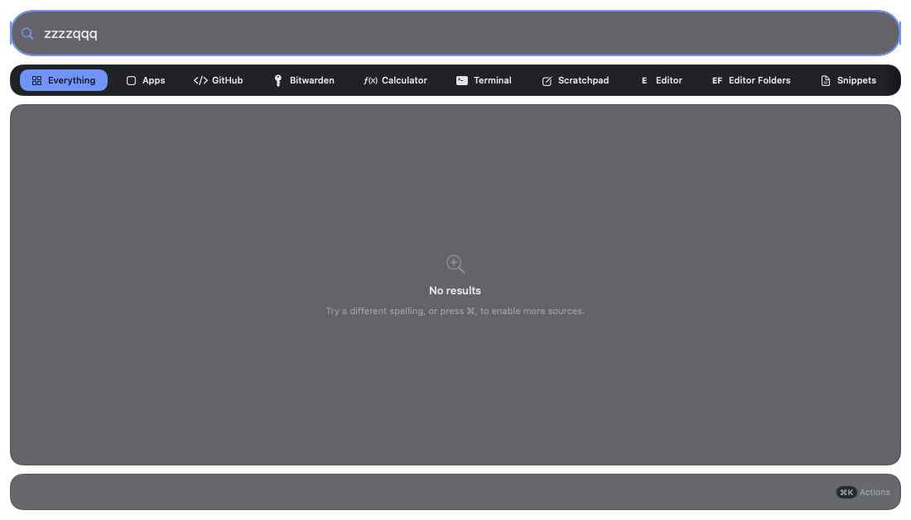
4 · Clipboard history with live preview
PASS1100x629actions/04-clipboard-preview.json
Proves: previewEnabled=true,itemCount>0 from seeded clips
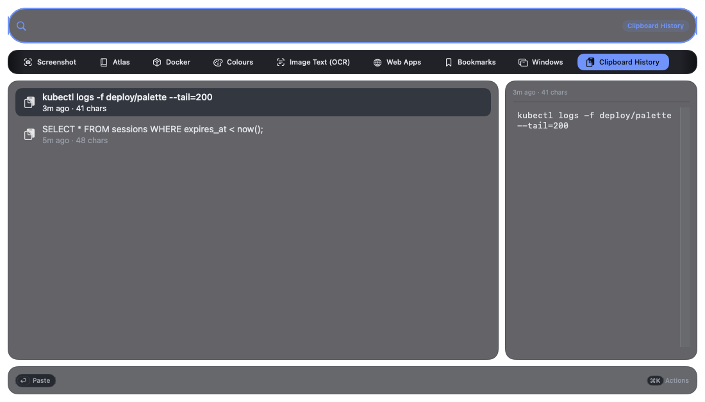
5 · Scratchpad
PASS1100x629actions/05-scratchpad.json
Proves: scratchpadActive=true
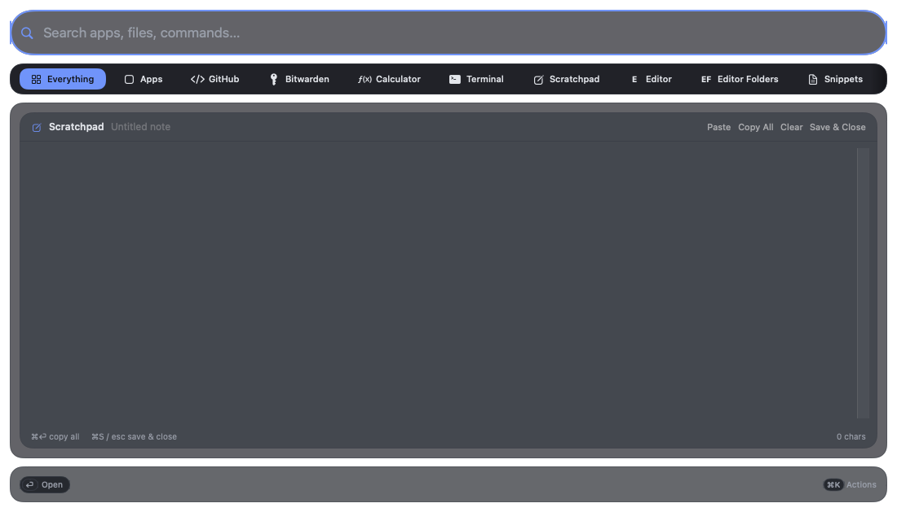
6 · Embedded terminal pane
SKIP1100x629actions/06-terminal.json
Proves: terminalActive=true after echo
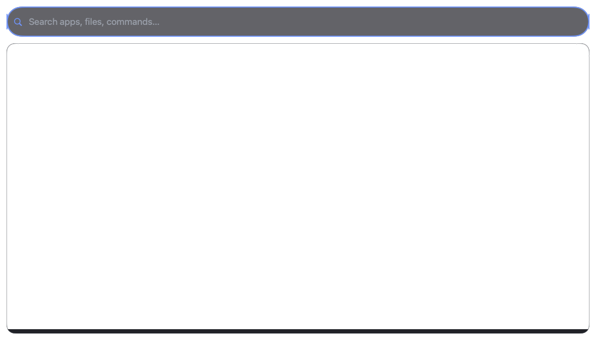
Not fully captured. SwiftTerm draws terminal glyphs into a layer; snapshot= captures the pane frame but not the text. The text itself was verified with PALETTE_TERMINAL_DEBUG: echo palette-2200 printed palette-2200.
9 · Theme browser (launcher /theme)
PASS1100x629actions/09-theme-browser.json
Proves: firstProvider=theme,itemCount>0
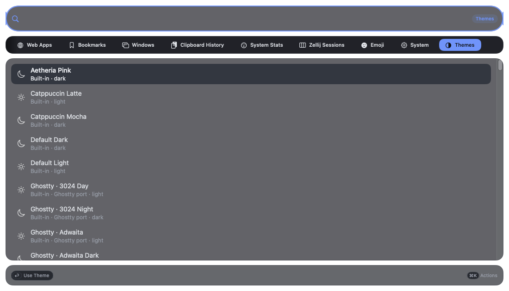
21 · Calculator result row
PASS1100x629actions/21-calculator-result.json
Proves: firstTitle=8,firstProvider=calc
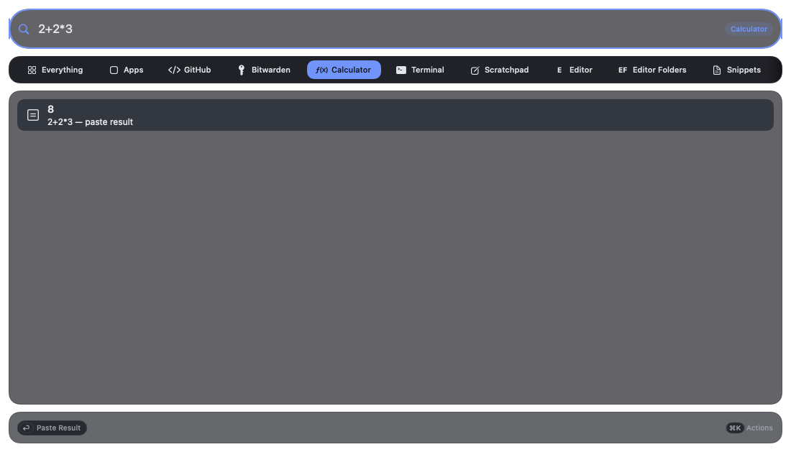
22 · Snippet row with expanded preview
PASS1100x629actions/22-snippet-expansion.json
Proves: firstProvider=snip,previewEnabled=true
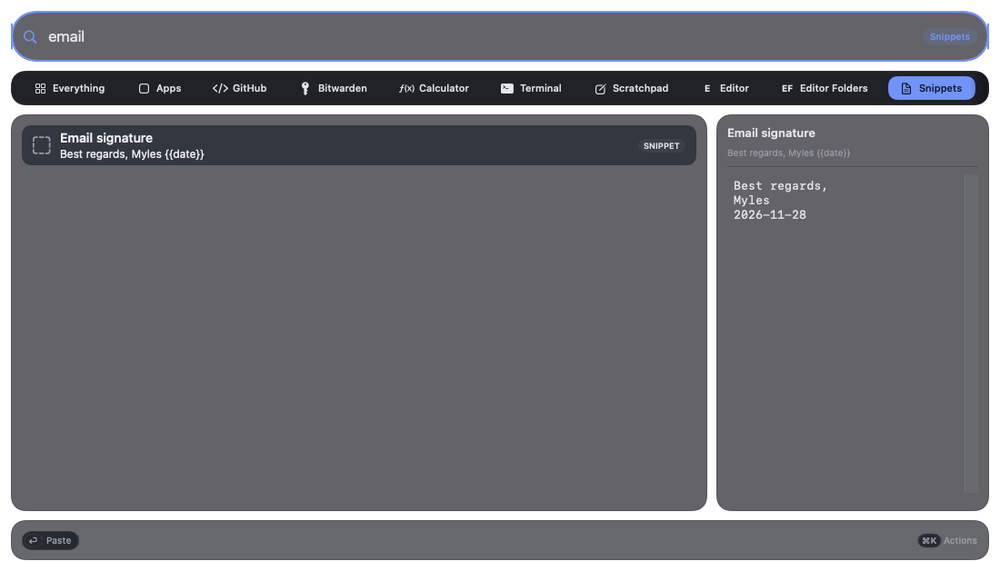
23 · Bookmark search results
PASS1100x629actions/23-bookmarks-results.json
Proves: firstProvider=bookmark,itemCount>0
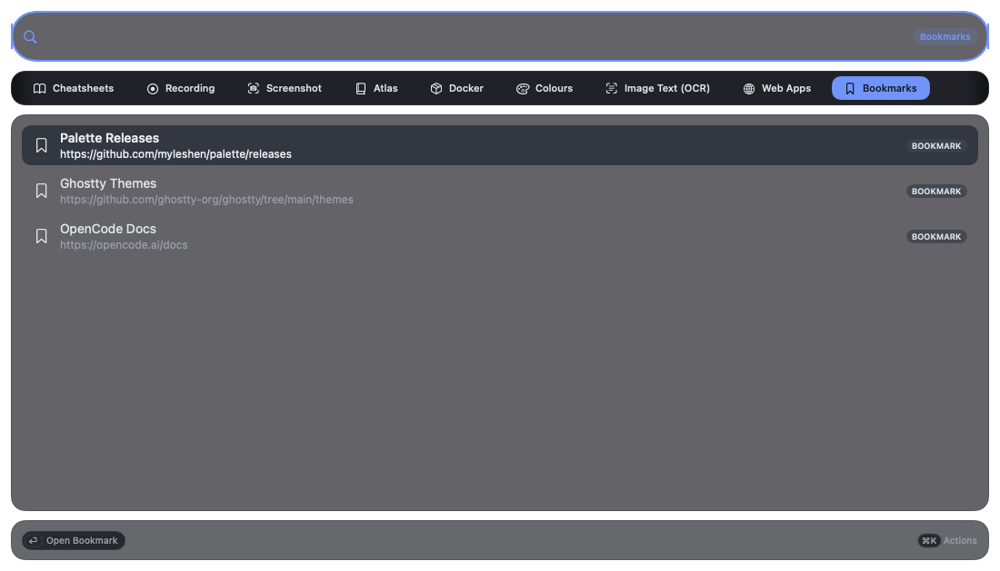
24 · Cheatsheet search results
PASS1100x629actions/24-cheatsheets-results.json
Proves: firstProvider=cheat,itemCount>0
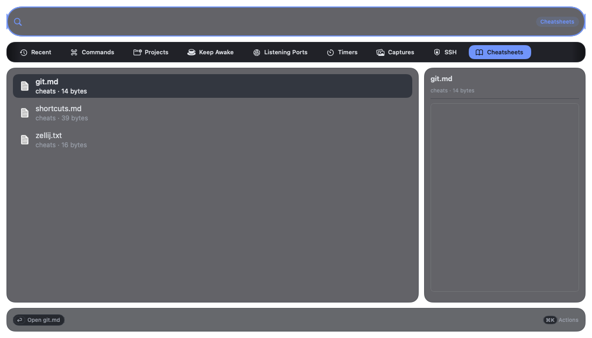
25 · Web App search results
PASS1100x629actions/25-webapps-results.json
Proves: firstProvider=web,itemCount>2
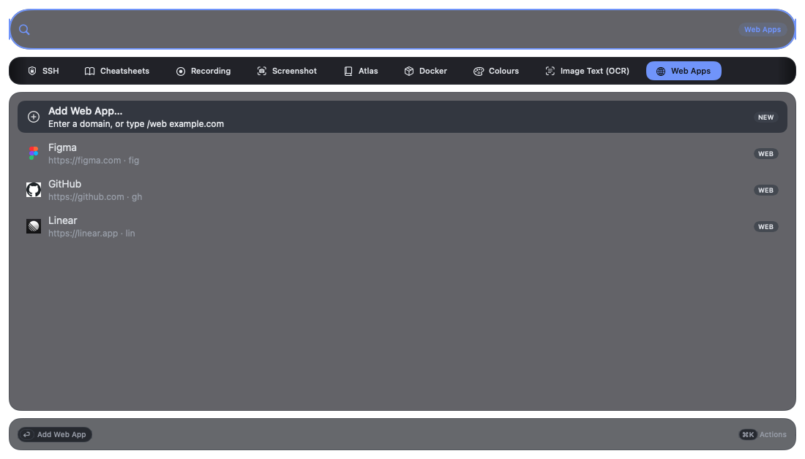
Panels
7 · Ask window, composer
PASS860x579actions/07-ask-window.json
Proves: askWindows=1
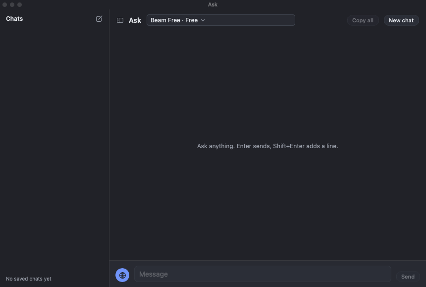
8 · Status panel
PASS300x775actions/08-status-panel.json
Proves: statusPanelOpen=true
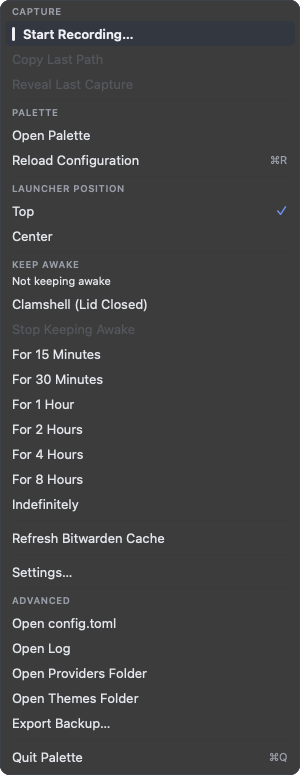
19 · Clipboard list: text, image and file entries
PASS1100x629actions/19-clipboard-list.json
Proves: itemCount>4 from five seeded rows
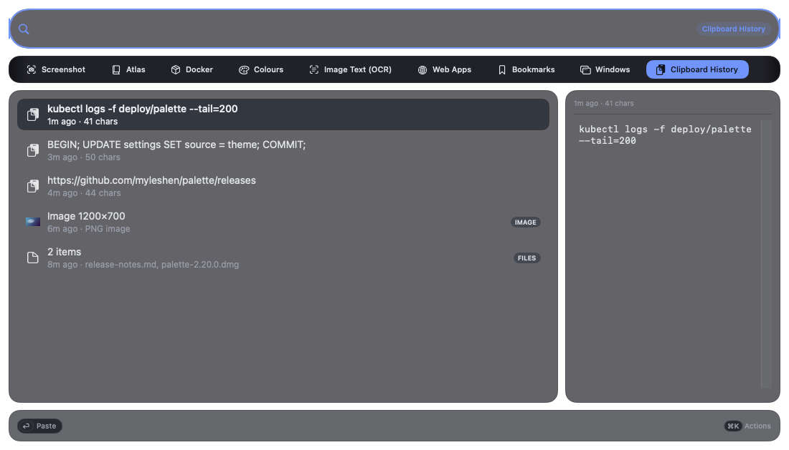
20 · Pinned clipboard row and chronology
PASS1100x629actions/20-clipboard-pinned.json
Proves: itemCount=3, pinned row offers Unpin, newest first
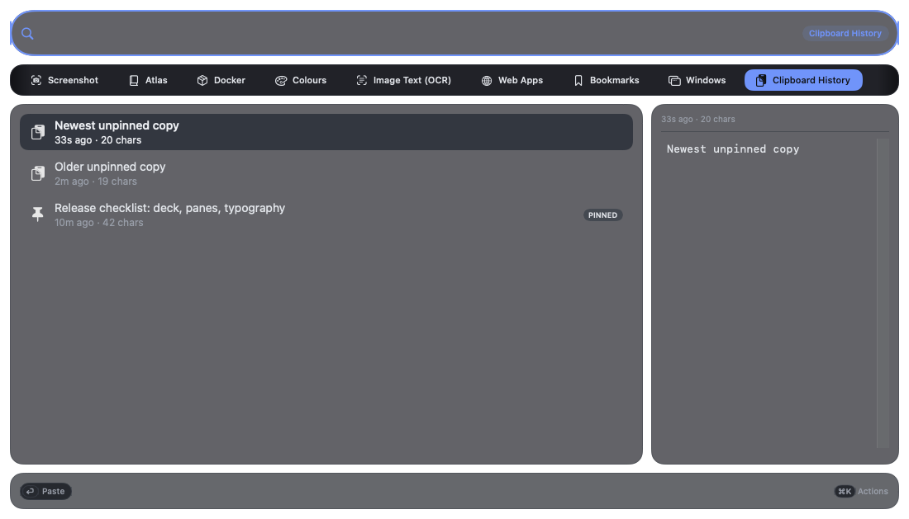
28b · Screenshot annotator preview (Pin toolbar)
PASS1180x792actions/28b-media-preview.json
Proves: annotator renders the capture window; Pin action visible
40 · Themed launcher with search, compared with 02
PASS1100x629actions/40-theme-applied-search.json
Proves: theme.id contains catppuccin, pixels differ from 02
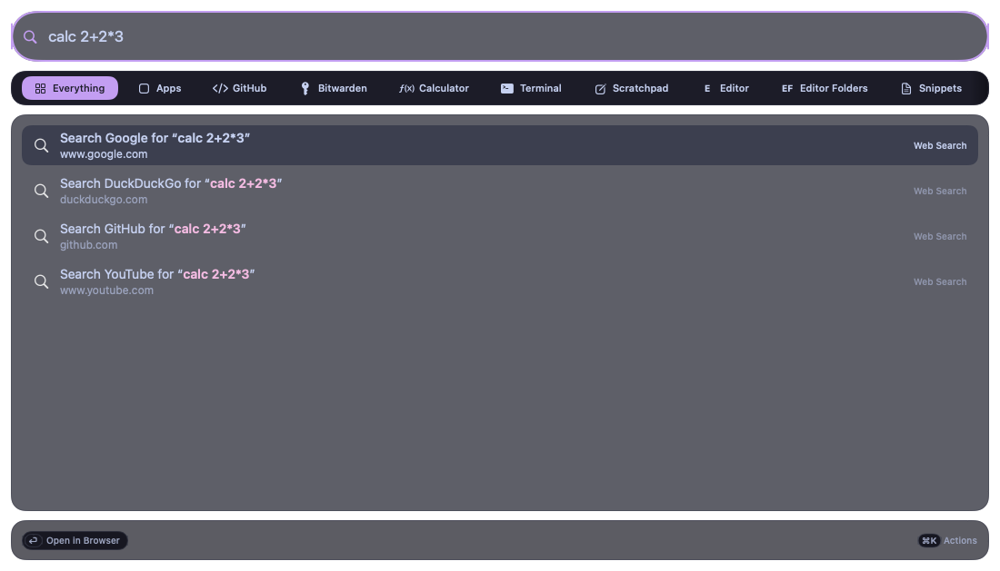
Accessibility
34 · Increase Contrast forced on
SKIPno-image
Proves: skipped: requires the real system accessibility setting
Not fully captured. Increase Contrast comes from NSWorkspace/SwiftUI colourSchemeContrast; there is no app override or script verb, and changing it would alter the user settings.
Errors
32 · Restart prompt (kitty/Ghostty)
SKIPno-image
Proves: skipped: no script verb, requires a running target app
Not fully captured. Needs themingEngine.restartPrompt, which only publishes after a real apply against a running app. No verb exposes it and faking it would not be the real window.
35 · Broken config.toml: visible parse error
PASS1100x629actions/35-broken-config.json
Proves: statusMessage contains 'config.toml has an error'
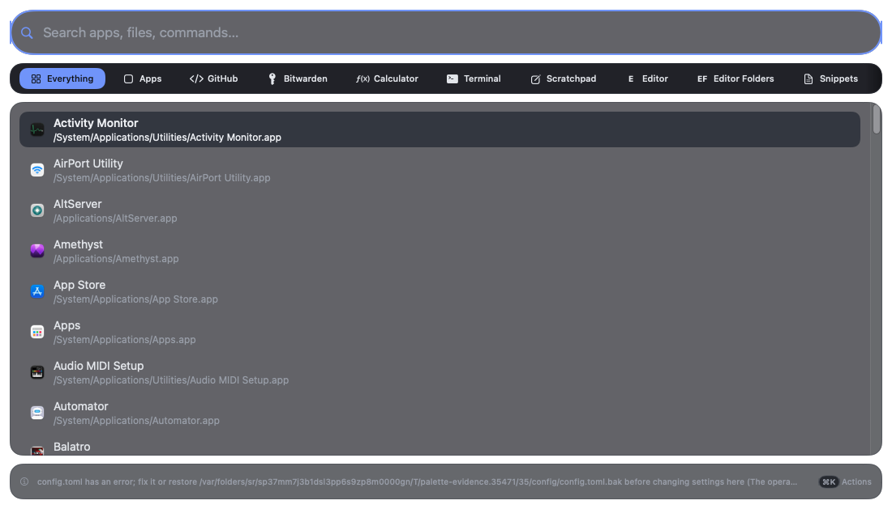
Settings panes
All 20 Settings sections, rendered by Scripts/layout-check.sh and copied here unchanged so every pane is represented even where no scripted state applies.